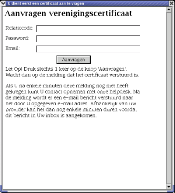
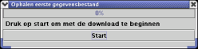
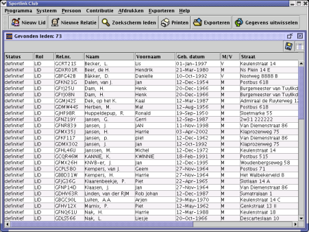
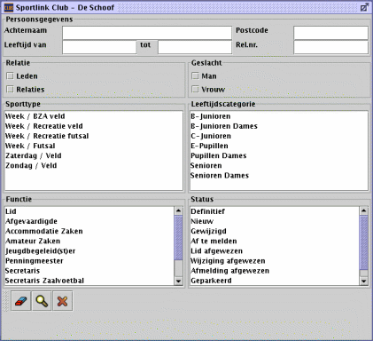
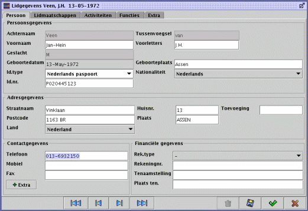
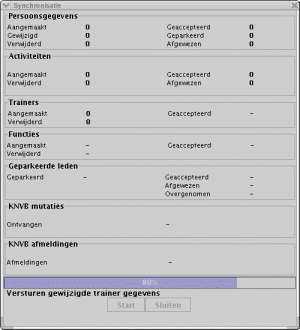
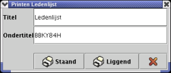
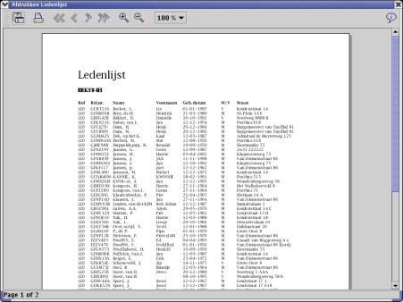
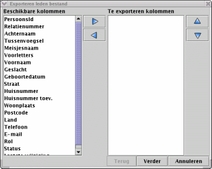

Dit document beschrijft de mogelijkheden van versie 3.02 van het Sportlink Club programma. Met Sportlink Club heeft u een moderne software oplossing in huis voor de ledenadministratie van uw vereniging. Het programma is gemakkelijk in de omgang; de functies wijzen zich vanzelf. Dankzij de internetgebaseerde opzet van Sportlink Club, gebeurt het uitwisselen van gegevens met de bond en het downloaden van updates volledig automatisch.
U kunt Sportlink Club op uw gemak gebruiken terwijl uw internetverbinding uit staat. U beschikt dan over een volledig functionerende ledenadministratie. Pas als u de lokaal ingevoerde gegevens wilt uitwisselen met uw sportbond, maakt u verbinding met het internet. Het is van belang dit off line verwerkingsprincipe in uw achterhoofd te houden wanneer u met Sportlink Club werkt. Wij raden u daarom aan in ieder geval onderstaande paragraaf over communicatie te lezen.
Het off line verwerkingsprincipe houdt in dat u alle mutaties lokaal op uw eigen PC invoert. Nadat de gegevens zijn ingevoerd of gewijzigd kunt u zelf het moment bepalen waarop alle mutaties in één communicatiesessie worden verzonden aan de centrale database van uw bond.(dit gebeurt in de vorm van zogenaamde (XML)-berichten)
Let u erop dat u voor het verzenden en het ophalen van gegevens een "open" internetverbinding dient te hebben.
Nadat u de Sportlink Club software heeft geïnstalleerd wilt u natuurlijk de ledeninformatie inlezen. Wanneer Sportlink Club via uw bond aangeboden is, kunt u de gegevens volledig automatisch downloaden. Als u Sportlink Club voor eigen gebruik heeft gekopieerd kunt u de gegevens invoeren via het leden invoerscherm.
Voor de eerste download van gegevens van de bond verwijzen wij naar de u toegezonden uitleveringsbrief. U vindt hierin het wachtwoord waarmee u Sportlink Club de eerste maal kunt opstarten.
Bovendien geeft de brief instructies over de manier waarop u contact kunt maken met de database van uw bond.
Indien u het Sportlink Club programma voor de eerste maal opent, zal de functie 'eerste download' automatisch worden opgestart. Uw actuele ledenbestand wordt dan vanuit de centrale database van de bond overgehaald naar uw eigen PC.
Voordat dit gebeurt zult u eerst een zogenaamd certificaat moeten aanvragen. Een certificaat kan gezien worden als een persoonlijke, clubgebonden digitale 'handtekening'. Deze handtekening heeft u nodig omdat het de database van uw bond precies vertelt van welke vereniging u bent en welke gegevens u mag ophalen. U hoeft zo'n certificaat slechts één maal aan te vragen. De systemen van de bond en van uw vereniging zullen elkaar daarna automatisch herkennen als u weer contact maakt.
Vul in het volgende scherm de door uw bond geleverde gebruikersnaam en wachtwoord in, tezamen met een e-mail adres waarop u het certificaat wilt ontvangen. Controleer of u uw internetverbinding open heeft staan voordat u op "Aanvragen" klikt, omdat het certificaat via internet bij de bond wordt aangevraagd.

U heeft de internetverbinding straks ook nodig om het certificaat op te slaan en de gegevens van uw club op te halen.
Druk op de knop "Aanvragen" en sluit het venster nadat u een bericht heeft ontvangen waarin staat dat een e-mail verstuurd is. Het is mogelijk dat u tijdens de aanvraag een bericht te zien krijgt met de melding "unsecure transmission"; een onveilige verbinding. Negeer dit en klik op "Proceed" om verder te gaan. Na enkele ogenblikken (maar zeker niet langer dan een paar minuten) zult u in uw e-mail inbox een bericht ontvangen. Dit bericht heeft een bijlage met een zogenaamde "[ClubID].keystore". Dit bestand moet - zoals in diezelfde e-mail staat aangegeven - in de directory C:\vladb worden opgeslagen. Dit is het certificaat dat dient als digitale handtekening. De bond weet nu dat u gemachtigd bent om de gegevens van uw club op te halen.
Nadat u het certificaat in C:\vladb\ heeft opgeslagen, gaat u terug naar Sportlink Club. Nu kunt u via menu optie "Systeem > Eerste download" beginnen met het downloaden van de ledeninformatie uit de database van de bond. Hetzelfde gebeurt als u de Sportlink Club software opnieuw opstart. Het systeem voert de download dan volledig automatisch uit wanneer u op 'ja' klikt in het scherm "start eerste download?". Vanzelfsprekend geldt in beide gevallen dat uw internetverbinding hiervoor open moet staan.
Hieronder ziet u een schermafbeelding van het dialoogscherm "eerste download".

Vanaf het moment dat de eerste download is afgerond kunt u met de ledenadministratie aan de slag. Voor de uitwisseling van de gegevens met uw bond klikt u eenvoudigweg op 'Gegevensuitwisseling', waarna de centrale database van de bond automatisch wordt bijgewerkt. Als u met uw lokale gegevens werkt heeft u geen internetverbinding nodig. U kunt dus na de eerste download de internetverbinding verbreken.
Omdat de Sportlink Club applicatie gebruik maakt van een lokale op uw PC en een centrale database bij de bond, zal de status van uw ledenlijst tussen deze twee databases kunnen verschillen. De statusgegevens worden per lid opgeslagen en weergegeven in uw applicatie; leden met een gewijzigde status zijn in de ledenlijst te herkennen aan een gekleurde balk.
Indien u één of meerdere wijzigingen aanbrengt in de gegevens van een lid dan verandert de status in 'gemuteerd'. Dit geeft aan dat een verandering is doorgevoerd in de lokale database. Deze zal op een moment van uw keuze doorgegeven worden aan de centrale database van de bond. Het zenden en ontvangen van mutaties gebeurt via de functieknop 'Gegevens uitwisselen'. Zorg ervoor dat u verbinding heeft gemaakt met het internet vóór het aanklikken van deze functie. Na verzending van de gegevens wordt de mutatie verwerkt in de centrale database van de bond. De verwerking geschiedt in principe volledig automatisch. Het systeem voert daarbij tevens een controle uit. Na deze controle zijn er drie mogelijkheden:
De kleuren die u bij gewijzigde gegevens in het hoofdscherm ziet, corresponderen met de status van de leden. Zo staat een oranje rij voor een nieuw aangemaakt lid dat nog niet met de bond is gesynchroniseerd; een groene rij voor een lokaal gewijzigd lid; een rode rij voor een lid dat niet correct is gesynchroniseerd en grijs duidt de geparkeerde en verwijderde leden aan.

In de menubalk vindt u alle beschikbare functies, de knoppenbalk biedt direct toegang tot meest gebruikte en bevat de volgende mogelijkheden:
De menubalk is onderverdeeld in de secties 'programma', 'systeem', 'persoon', 'afdrukken', 'exporteren' en 'help'. Buiten de eerder genoemde en veel gebruikte functies die ook op de knoppenbalk staan, heeft u hier de volgende mogelijkheden:
Deze functies zullen in de komende secties nader worden uitgewerkt
In het venster onder de knoppenbalk staat standaard het overzicht van alle leden van uw vereniging. Wanneer u een groep leden via het zoekscherm geselecteerd heeft, ziet u in dit scherm een overzicht van de selectie. (meer hierover onder zoekscherm leden).
Met de muis kunt u een lid selecteren en door dubbel te klikken of menu optie 'Lid - Bekijken / Wijzigen' te kiezen, kunt u de gegevens van dit lid inzien of wijzigen. De kolommen in het hoofdscherm kunt u vergroten of verkleinen door in de menubalk van het venster op de rand van het kopje te klikken, deze vast te houden en te verslepen. Door op een titel te klikken, sorteert u alle gegevens in het scherm op deze kolom; twee maal klikken resulteert in een sortering in de omgekeerde volgorde.
Bovenaan het hoofdscherm vindt u rechtsboven nog een knop om de kolommen te wijzigen. Met behulp van deze knop kunt u de kolomindeling en volgorde van het hoofdscherm aanpassen. Met het knopje ernaast kunt u uw selectie opslaan inclusief de gekozen sortering en kolomindeling.

Het zoekscherm bestaat uit een formulier, waarin u via de invoervelden kunt zoeken op uw ledenbestand. Wanneer u op het 'vergrootglas' drukt komt er een scherm tevoorschijn met de leden die aan deze zoekcriteria voldoen. Met behulp van de 'gum' worden eerder opgegeven zoekcriteria gewist. Indien u geen zoekcriteria opgeeft, maar wel op het vergrootglas drukt, geeft het systeem een overzicht van alle leden van uw vereniging.
Het programma kan zoeken op de categorieën 'persoonsgegevens', 'relatie' 'geslacht', 'sporttype', 'leeftijdscategorie', 'functies' en 'status'. Bij de velden 'achternaam' en 'postcode' zoekt Sportlink Club naar alle leden waarvan het desbetreffende veld begint met de opgegeven waarde. Als u bijvoorbeeld 'Vee' in het achternaamveld typt, geeft het systeem zowel dhr. Veenstra als dhr. Veer.
Nadat u in het zoekscherm op het 'vergrootglas' heeft gedrukt, zullen in het hoofdscherm de leden komen te staan die voldoen aan de door u opgegeven zoekcriteria. Hoe meer verschillende categorieën u als zoekcriterium opgeeft, hoe minder leden er worden gevonden. Binnen de categorieën (bijv. functies) zullen meer selecties uiteraard leiden tot meer resultaten. Zoals bij elke applicatie kunt u met behulp van de 'CTRL' of de 'SHIFT' toets en het klikken met de muis meerdere keuzes in een selectie combineren.
U kunt lokaal - dus zonder verbinding te maken met het internet - uw ledenadministratie gebruiken. Het Sportlink Club programma maakt onderscheid tussen 'leden' en 'relaties'. De laatste categorie is bedoeld voor alle relaties van uw vereniging die niets met de bond te maken hebben en daarom niet worden doorgegeven aan de centrale database. Denk hierbij bijvoorbeeld aan leveranciers of sponsors. De basis van de relatie informatie is gelijk aan die van de leden. U kunt over uw leden echter veel meer bijhouden, zoals activiteiten en functies binnen de vereniging. Dit onderhoudsscherm is dus uitgebreider van opzet zodat we alleen dit scherm zullen bespreken. Het scherm voor het aanmaken van een nieuw lid bevat nog niet alle tabbladen waarop u de extra gegevens kunt invullen. Deze verschijnen automatisch zodra u de NAW gegevens van een nieuw lid heeft ingevuld. U bevindt zich dan meteen in het scherm 'Wijzigen Lid'

Het ledenscherm dat opent wanneer u dubbelklikt op een bestaand lid, bestaat uit een vijftal tabbladen waarin u 'persoonsgegevens', 'lidmaatschappen', 'activiteiten', 'functies' (clubfuncties en trainerschappen) en 'extra' informatie kunt bekijken en wijzigen.
Onderaan het scherm staan rechts naast de pijltjes om naar het eerste, vorig, volgend of laatste lid te gaan, een prullenbak, een diskettesymbool, een groen vinkje en een rood kruis. Met het vinkje bevestigt u de gegevens, waarna de wijziging direct in de achterliggende ledenlijst wordt verwerkt en het scherm sluit. Het diskettesymbool slaat de gegevens ook op, maar zal het scherm niet sluiten. Wanneer u op het rode kruis klikt, wordt het scherm afgesloten en de gegevens niet in de lijst verwerkt. Klikken op de prullenbak betekent dat de ingevoerde gegevens worden verwijderd.
Bij het registreren van activiteiten en functies spreekt het voor zich dat wijzigingen alleen worden verwerkt als het groene vinkje is gebruikt. Bij het persoonsgegevens scherm moet niet vergeten worden om op het diskette symbool te klikken als gegevens zijn gewijzigd. Alleen het groene vinkje onderaan zal de persoonsgegevens dus niet wijzigen (dit om onnodige synchronisatie met het bondssysteem te voorkomen.
Bij de contactgegevens en onder het tabblad 'extra' kunt u verder eigen aanvullende informatie over uw leden opslaan die niet in de bondsdatabase zal worden opgenomen.

Met behulp van de knop 'Gegevens uitwisselen' of via de 'Systeem' optie uit het menu, kunt u de gemaakte lokale wijzigingen met de centrale database van de bond synchroniseren. De synchronisatie houdt hierbij ook rekening met eventuele wijzigingen aan de kant van de bond. In het synchronisatiescherm ziet u de resultaten van de uitwisselingsprocedure.
Zie synchronisatie voor de statusbeschrijvingen die het systeem terugstuurt.
Via de menu-optie 'afdrukken' kunt u voor één gewijzigd lid een leden mutatiekaart aanmaken, of van selecties uit uw ledenbestand de ledenlijst, lijst van functionarissen of adreslabels afdrukken.
LMK
Voor het afdrukken van een leden mutatie kaart (LMK) dient u eerst in het hoofdscherm een gewijzigd lid (groene rij) aan te klikken. Wanneer u vervolgens in het menu op 'Afdrukken - LMK' drukt, opent het systeem het printer dialoogscherm waarna u de LMK kunt afdrukken.
Overige printfuncties
De overige afdrukmogelijkheden behelzen de 'ledenlijst', 'lijst van functionarissen' en 'adreslabels'. Zij maken gebruik van hetzelfde scherm.

Eerst kiest u een titel en ondertitel voor het door u gewenste rapport

erst kiest u een titel en ondertitel voor het door u gewenste rapport. Vervolgens krijgt u een afdrukvoorbeeld te zien waarin u met de blauwe pijltjes kunt navigeren, zoomen met het vergrootglas en waarin u kunt kiezen om het 'rapport' af te drukken of te exporteren in PDF formaat. Soms zult u zien dat lange gegevens zoals achternamen en straatnamen, 'samengedrukt' op het afdrukvoorbeeld worden weergegeven. Dit kunt u eenvoudig oplossen door in het hoofdscherm de kolombreedte aan te passen. (zie ook hoofdscherm)
Via de functie 'exporteren' kunt u geselecteerde gegevens van leden uit de Sportlink Club applicatie uitvoeren naar een bestand van het type CSV. Zo'n CSV-bestand (met extensie .csv) bevat kommagescheiden waarden en is een veelvoorkomend formaat dat u weer kunt inlezen in andere toepassingen zoals Word of Excel. Naast de standaard printmogelijkheden van Sportlink Club kunt u op deze manier uw gegevens afdrukken in elk denkbare uitvoering.
Voordat u de gegevens exporteert is het volgende scherm te zien:

Hier kunt u de kolommen en hun volgorde opgeven die in het CSV bestand moeten worden opgeslagen. Na op 'Verder' te hebben gedrukt kunt u het gewenste scheidingsteken opgeven; dit hoeft dus niet persé een komma te zijn. Druk wederom op 'Verder' om het bestand onder de door u gewenste naam op te slaan. Het bestand is nu gereed om in te lezen in uw tekstverwerker of spreadsheet programma voor verdere bewerking.